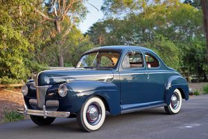
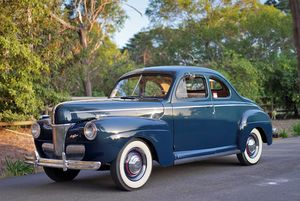

Автомобильная Энциклопедия
Автомобильная ЭнциклопедияИстория автомобиля
Содержание
История первого автомобиля началась ещё в 1768 году вместе с созданием паросиловых машин, способных перевозить человека.
В 1806 году появились первые машины, приводимые в движение двигателями внутреннего сгорания на англ. fuel gas, что привело к появлению в 1885 году повсеместно используемого сегодня газолинового или бензинового двигателя внутреннего сгорания.
Машины, работающие на электричестве ненадолго появились в начале XX века, но почти полностью исчезли из поля зрения вплоть до начала XXI века, когда снова возникла заинтересованность в малотоксичном и экологически чистом транспорте. По существу, раннюю историю автомобиля можно разделить на этапы, различающиеся преобладающим способом самоходного движения.
Поздние этапы определялись тенденциями в размере и стилистике внешнего вида, а также предпочтениями в целевом использовании.
А также в 1840 году были изобретены велосипеды.
Хронология изобретений и событий
1. Изобретатели-первопроходцы
Первый прообраз автомобиля был построен как игрушка для китайского императора членом иезуитской общины в Китае Фердинандом Вербистом в 1672 году (см. рисунок ниже).

Прообраз автомобиля Фердинанда Вербиста 1672 г. (Автор: неизвестен - 18th century print, Общественное достояние, https://commons.wikimedia.org/w/index.php?curid=3988454)
В России прообраз первого автомобиля создал крепостной крестьянин Вятской губернии Яранского уезда Леонтий Шамшуренков. Своё изобретение он представил в Санкт-Петербурге 1 ноября 1752 года учёному Михаилу Ломоносову. Это была четырёхколёсная самостоятельная коляска с педальным приводом, развивающая скорость до 15 км/ч. Им же был разработан первый верстометр (автомобильный счётчик, измеряющий пройденный путь).
Позже, в 1780-х годах русский конструктор, изобретатель и инженер Иван Кулибин начал работу над каретой с педалями. В 1791 году он создал трёхколёсный самоходный экипаж, развивающий скорость до 16,2 км/ч. В этой «самокатке» он разъезжал по улицам Петербурга. Его трёхколёсный механизм содержал почти все основные узлы будущего автомобиля: коробка передач, маховое колесо, подшипники качения.
К сожалению, как и со многими другими его изобретениями, государство не видело потенциала этих разработок, и они не получили дальнейшего развития. Незадолго до своей смерти изобретатель начал работу по совмещению парового двигателя с своей «самокаткой», но так и не закончил работу. На какой стадии находился процесс осталось неизвестным.
Немецкий инженер Карл Бенц, изобретатель множества автомобильных технологий, считается изобретателем и современного автомобиля.
Четырёхтактный бензиновый (газолиновый) двигатель внутреннего сгорания, который представляет самую распространённую форму современного самоходного движения — разработка немецкого изобретателя Николауса Отто.
Подобный четырёхтактный дизельный двигатель был также изобретён немцем Рудольфом Дизелем. Первый двигатель, работающий по такому принципу, был построен в 1897 году.
Водородный топливный элемент, одна из технологий, провозглашённых как замена для газолина в качестве источника энергии автомобилей, в принципе был обнаружен другим немцем Шёнбейном Кристианом Фридрихом в 1838 году.
Автомобиль на электрической тяге обязан своим появлением одному из изобретателей электрического мотора венгру Аньош Йедлику и создавшему в 1858 году свинцово-кислотную батарею Гастону Планте.
2. Ранние автомобили
Паровые автомобили
Фердинанд Вербист, член иезуитской общины в Китае, построил первый автомобиль на паровом ходу около 1672 года как игрушку для китайского императора. Автомобиль был небольшого размера и не мог везти водителя или пассажира, но, возможно, он был первым работающим паровым транспортом («автомобилем»).
Считают, что паросиловые самоходные машины разработаны в конце XVIII века.
В 1770 и 1771 году Николя-Жозеф Кюньо демонстрировал свой экспериментальный тягач артиллерийских орудий с паровым приводом (рис. 1) fardier à vapeur (паровая телега). Конструкция Кюньо оказалась непрактичной и не развивалась в его родной Франции.

Рис.1. Чертёж паровой телеги Кюньо, 1769 г. (Автор: Paul Nooncree Hasluck - The Automobile By Paul Nooncree Hasluck (1903), Общественное достояние, https://commons.wikimedia.org/w/index.php?curid=6959741)
Центр инноваций переходит в Великобританию.
К 1784 году в Редруте Уильям Мэрдок построил работающую модель паровой кареты, а в 1801 году Ричард Тревитик ездил на полноразмерной машине по дорогам Камборна (рис. 2).
Рис. 2. Репродукция дорожного локомотива Ричарда Тревитика 1801 года «Сопящий Дьявол». (Автор: Chris McKenna (Thryduulf), CC BY-SA 4.0, https://commons.wikimedia.org/w/index.php?curid=672121)
Такие машины какое-то время были в моде и на протяжении следующих десятилетий были разработаны такие новшества как ручной тормоз, многоступенчатая трансмиссия и улучшенное рулевое управление.
Некоторые были коммерчески успешны в обеспечении общественного транспорта, пока общественное сопротивление против этих слишком быстрых машин не повлекло принятие в 1865 году "закона о локомотивах" (англ. «Locomotive Act»), требующего, чтобы на общественных дорогах Великобритании перед самоходными машинами шёл человек, размахивающий красным флагом и дующий в сигнальную дудку.
Это решительно подавило развитие дорожного автотранспорта практически на всю оставшуюся часть XIX века. В итоге усилия инженеров и изобретателей были брошены на железнодорожные локомотивы. Закон не отменялся вплоть до 1896 года, хотя необходимость в красном флаге была устранена в 1878 году.
Первый американский автомобиль — машина-амфибия Оливера Эванса.
Первый патент на автомобиль в Соединённых Штатах был предоставлен Оливеру Эвансу в 1789 году.
Эванс демонстрировал его первую успешную самоходную машину, которая была не только первым автомобилем в США, но также и первой машиной-амфибией,
так как была способна путешествовать на колёсах по земле и посредством лопастей на воде.
Среди других работ — паровая машина на жидком топливе, собранная в 1815 году профессором Пражского политехникума Йозеф Божеком и четырёхместный паровой фаэтон, сделанный в 1813 году Уолтером Хэнкоком, разработчиком и оператором паровых автобусов Лондона.
Электрические автомобили
В 1828 году венгр Йедлик Аньош, который изобрёл ранний тип электрического мотора, создал миниатюрную модель автомобиля, приводимого в движение при помощи его нового двигателя (рис. 3).
Рис. 3. Аньош Йедлик и первая модель электрического автомобиля
(Источник: https://elektroznatok.ru/info/people/ippolit-vladimirovich-romanov)
Первый электроэкипаж реального размера был изобретен в период с 1828 по 1839 года Робертом Андерсоном, проживавшим в Шотландии (рис. 4).
Рис. 4. Первый электромобиль (Источник: http://hybmotors.ru/kogda-byil-sozdan-pervyiy-elektromobil/)
Примерно в то же время, в 1835 году голландские изобретатели Стратин Гронинген и Кристофер Беккер создали небольшую электрическую машину, приводимую в движение неперезаряжаемыми первичными гальваническими элементами (см. видео "Электрическая машина Стрэтина и Беккера"), а затем создали также автомобиль на электрической тяге.
Видео: "Электрическая машина Стрэтина и Беккера"
(Источник: https://www.prestigeelectriccar.com/en/news/2294/Stratingh__Becker_electric_vehicle_from_1835)
В 1834 году изобретатель первого электрического мотора постоянного тока, кузнец штата Вермонт Томас Дэвенпорт, установил свой мотор в маленькую модель машины, которой он оперировал на кольцевом электрифицированном треке.
В 1838 году шотландец Роберт Дэвидсон разработал электрический локомотив, который достигал скорости 6 км/ч (4 мили/ч).
В Англии в 1840 году был предоставлен патент за использование рельсовых путей в качестве проводника электрического тока, и подобные американские патенты были выданы в 1847 году Лиллей и Колтен.
Двигатели внутреннего сгорания
Ранние попытки изготовления и использования двигателей внутреннего сгорания были затруднены из-за отсутствия подходящего топлива, особенно жидкого, и ранние двигатели использовали газовую смесь. Ранние эксперименты с использованием газов были проведены швейцарским инженером Франсуа Исааком де Ривасом (1806 г.), построившим двигатель внутреннего сгорания, работающий на водородно-кислородной смеси, и англичанином Семюелем Брауном (1826 г.), экспериментировавшим с собственным двигателем на водородном топливе в качестве транспортного средства до Шутерс Хилл, юго-восточный Лондон.
Гиппомобиль бельгийца Этьена Ленуара (рис. 5) с одноцилиндровым двигателем внутреннего сгорания на водородном топливе совершил тестовый пробег из Парижа в Жуанвиль-Ле-Пон в 1860 году, покрыв около девяти километров примерно за три часа. Поздняя версия работала на угольном газе.
Рис. 5. Гиппомобиль Ленуара (Автор: Вероятно Émile Bourdelin - macine-history.com, Public Domain, https://commons.wikimedia.org/w/index.php?curid=27289668)
Около 1870 года в Вене, Австрия (тогда Австро-Венгерская империя) изобретатель Зигфрид Маркус поместил жидкостный двигатель внутреннего сгорания на простой тележке что сделало его первым человеком, использовавшим транспортное средство на бензине. Сегодня этот автомобиль известен как «первая машина Маркуса» (рис. 6).

Рис. 6. «Первая машина Маркуса», 1870 год, Вена, Австрия: Первый в мире транспорт на бензине. (Общественное достояние, https://commons.wikimedia.org/w/index.php?curid=905510)
В 1883 году Маркус получил немецкий патент на низковольтную систему зажигания типа магнето. Это был только первый его автомобильный патент. Эта технология была использована во всех дальнейших двигателях, в том числе в четырёхместной «второй машине Маркуса» (рис. 7) в 1888/89. Зажигание в сочетании с «генератором с вращающимися щетками» сделали конструкцию второго автомобиля очень инновационной.
Рис.7. Вторая машина Маркуса, 1888 г. Технический музей Вены.
(Общественное достояние, https://commons.wikimedia.org/w/index.php?curid=859274)
Общеизвестно, что первый реально использующийся автомобиль с бензиновым двигателем был сконструирован одновременно несколькими независимыми немецкими изобретателями. Карл Бенц построил свой первый автомобиль (Benz Patent-Motorwagen) в 1885 в Мангейме (рис. 8). Бенц получил патент на свой автомобиль 29 января 1886 и начал первый выпуск автомобилей в 1888 году после того как его жена Берта Бенц показала с помощью первой междугородней поездки от Мангейма до Пфорсгейма и обратно в августе 1888 г., что безлошадные экипажи вполне подходят для повседневного использования. С 2008 года это событие отмечено Мемориальной трассой имени Берты Бенц.
Рис. 8. Автомобиль Бенца, 1885 год. Первый серийный автомобиль с двигателем внутреннего сгорания (репродукция)
(CC BY-SA 3.0, https://commons.wikimedia.org/w/index.php?curid=141420)
Вскоре, в 1889 г. в Штутгарте Готтлиб Даймлер и Вильгельм Майбах сконструировали совершенно новое средство передвижения Daimler Stahlradwagen, которое задумывалось как автомобиль, а не конная повозка, оснащенная двигателем (рис. 9).

Рис. 9. Daimler Stahlradwagen, 1889 г. (Автор: Brücke-Osteuropa - собственная работа, CC0, https://commons.wikimedia.org/w/index.php?curid=17925898)
Им же обычно приписывают изобретение в 1886 г. первого мотоцикла (Daimler Reitwagen).
Однако, в 1882 г. Энрико Бернарди из Университета Падуи запатентовал одноцилиндровый бензиновый мотор объёмом 122 см³ (7,4 куб. дюйма) мощностью 0,024 л. с. (17,9 Вт) и установил его на трёхколёсный велосипед своего сына, что позволяет рассматривать его как минимум кандидатом на изобретение первого автомобиля и мотоцикла. В 1882 г. Бернарди увеличил трицикл так, что он был способен перевозить двух взрослых человек.
Один из первых четырёхколёсных автомобилей в Британии, работающий на бензине был построен в Бирмингеме в 1895 г. Фредериком Вильямом Ланчестером, им же был запатентован дисковый тормоз, а первый электрический стартер был установлен на Арнольд, адаптацию Бенц-Вело, выпускавшимся с 1885 по 1898 гг.
В этой суматохе были практически забыты многие первопроходцы. Джон Вильям Ламберт из Огайо в 1891 г. построил трёхколёсный автомобиль, который сгорел в том же году. А Генри Надинг из Аллентауна, Пенсильвания сконструировал четырёхколёсный. Весьма вероятно, что таких изобретателей было больше.
3. Эра Ветеранов
Первое производство автомобилей было основано в 1888 г. в Германии Карлом Бенцем и, по лицензии Бенца, во Франции Эмилем Роже.
Было и множество других, в том числе производители трициклов Рудольф Эгг, Эдвард Батлер и (англ.) Léon Bollée. Трицикл Болле, с двигателем собственной разработки (рабочий объём 650 куб. см), под управлением водителя Жамин смог развить среднюю скорость 45 км/ч на ралли «Париж-Турвилль» 1897 г.
К 1900 г. массовое производство автомобилей началось во Франции и США. Первой компанией, созданной исключительно для производства автомобилей стала французская «Панар и Левассор» (Panhard et Levassor), которая также первой применила четырёхцилиндровый двигатель. За «Панар», созданной в 1889 г. последовал «Пежо» двумя годами позже. К началу ХХ в. в западной Европе начался подъём автомобильной промышленности, особенно во Франции (рис. 10, 11, 12), где в 1903 г. было собрано 30 204 автомобиля, что составило 48,8 % всего объёма производства автомобилей в мире.
Рис. 10. Луи Рено и его первый автомобиль Voiturette, Франция, 1898 год.
(Общественное достояние, https://commons.wikimedia.org/w/index.php?curid=515374)
Рис. 11. Первый автомобиль в Японии, Французский Panhard-Levassor в 1898 году.
(Общественное достояние, https://commons.wikimedia.org/w/index.php?curid=905423)

Рис. 12. Пежо "Тип 15" (Peugeot Type 15), 1897 г.
(Источник: https://www.autoviva.com/type_15/version/51554)
В 1893 году в Соединённых штатах братья Charles Duryea и J. Frank Duryea основали компанию Duryea Motor Wagon Company, ставшей первой американской компанией-производителем автомобилей. Однако на этом этапе производства автомобилей доминировал Рэнсом Эли Олдс с его компанией Olds Motor Vehicle Company (позже известная как Oldsmobile). Его крупномасштабная сборочная линия была запущена в 1902 году. В этом же году Кадиллак (сформированный из англ. Henry Ford Company), Винтон и Форд выпускают автомобили тысячами.
В течение нескольких лет сотни производителей по всему западному миру стали выпускать автомобили по невероятному количеству различных технологий. Паровые, электрические и бензиновые автомобили конкурировали десятилетия, пока в 1910-х бензиновые двигатели внутреннего сгорания не стали доминирующими. Разрабатывались автомобили с двумя и даже четырьмя двигателями, а рабочий объём двигателей достигал дюжины литров. В этот период были опробованы и отброшены многие современные разработки, в том числе газовые и электрические гибриды, многоклапанные двигатели, верхние распределительные валы, привод на все колёса. В 1898 г. Луи Рено установил на Де Дион-Бутон (De Dion-Bouton) карданный вал и дифференциал с коническими шестернями, создав, наверное, первый в истории «хот-род». Это позволило Луи и его братьям занять своё место в автомобильной промышленности.
В отсутствии каких-либо четких стандартов в отношении архитектуры автомобиля, типа кузова, материалов и управления изобретения появлялись очень быстро и неорганизованно. Многие автомобили этой поры, например, управлялись не рулевым колесом, а ручкой и большинство передвигались с фиксированной скоростью. Цепной привод был более распространен, чем карданный вал, а закрытые кузова были крайне редки.
В 1902 г. Renault стал устанавливать барабанные тормоза. На следующий год голландский разработчик Якобус Спайкер построил первый гоночный автомобиль с полным приводом. Этот автомобиль никогда не участвовал в соревнованиях, и до 1965 г. и Jensen FF полноприводных спортивных автомобилей в серийном производстве не было.
Инновации не ограничились транспортными средствами. Увеличение числа автомобилей ускорило рост нефтяной промышленности, а также развитие технологии производства бензина (вместо керосина и жидкого топлива из угля), а также развитие термоустойчивых минеральных смазочных материалов (вместо растительных и животных масел).
Последовали и социальные эффекты. Об автомобилях сочиняли музыку, такую как «In My Merry Oldsmobile» (традиция продолжается), а в 1896 г. Уильям Дженнингс Брайан стал первым кандидатом в Президенты, проводившем предвыборную кампанию в Декейтере, штат Иллинойс из автомобиля (подаренном «Mueller»).
Тремя годами спустя Джейкоб Герман начал традицию таксистов Нью-Йорка разогнавшись по Лексингтон-авеню до «безбашенной» скорости 12 миль в час (19 км/ч).
В том же 1899 г. Акрон, Огайо принял первый самодвижущийся фургон для перевозки заключенных.
К 1900 уже можно было говорить о национальной автомобильной промышленности во многих странах, в том числе Бельгии (производившей Vincke, копию Benz; Germain — псевдо Панар; Linon и Nagant, оба основаны на Gobron-Brillié), Швейцарии (ведущие производители Fritz Henriod, Rudolf Egg, Saurer, Johann Weber и Lorenz Popp), Шведская Vagnfabrik AB, Hammel (основанная A. F. Hammel и H. U. Johansen около 1886 г. в Копенгагене, Дания), Irgens (из Бергена, Норвегия, 1883 г., но без заметного успеха), Италии (где в 1899 г. появился FIAT), и даже в Австралии (где Pioneer открыл мастерскую в 1898, с производства уже тогда устаревшего, работавшего на парафине шарнирносочлененного фургона).
Тем временем, Кох начал поставки автомобилей и грузовиков из Парижа в Тунис, Египет, Иран и Голландскую Восточную Индию. Внешняя торговля становилась глобальной. 5 ноября 1895 года в США Джордж Болдуин Селден (George B. Selden) получил патент на 2-тактный автомобильный двигатель (U.S. Patent 549,160). Этот патент больше мешал, чем способствовал развитию автомобилей в США. Большинство крупных американских компаний были лицензированы патентом Селдена, и были вынуждены платить за каждый произведенный автомобиль.
Братья Студбейкер, став ведущим производителем конных повозок в мире, перешли к производству электрических автомобилей в 1902 году, и бензиновых двигателей - в 1904 году, но при этом продолжали производить конные повозки до 1919 года. В 1908 году в Перу был произведен первый автомобиль (англ. Grieve) на континенте Южной Америки.
Однако в этот период — период ветеранов — автомобили рассматривались больше в качестве модной новинки, нежели как по-настоящему полезное устройство. Поломки были очень часты, топливо было нелегко достать, пригодных для передвижения на автомобилях дорог было мало, а быстрое развитие отрасли означало, что годовалый автомобиль практически ничего не стоил. Решающими событиями, доказавшими полезность автомобиля, стали: заезд Берты Бенц 1888 г. на большую дистанцию; она проехала более 80 км (50 миль) от Мангейма до Пфорцхайма, чтобы продемонстрировать потенциал транспортных средств, которые производил её муж Карл Бенц, и успешный трансконтинентальный заезд англ. Horatio Nelson Jackson, пересёкшего США в 1903 г.
4. Бронзовая или Эдвардианская эра
Получившая своё название от распространенного применения бронзы в США, англ. Brass Era car (или Эдвардианская) эра продолжалась с примерно 1905 г. до начала Первой мировой войны в 1914 г. 1905 г. стал вехой в развитии автомобиля, отметившей момент, когда больше автомобилей стало продаваться не энтузиастам, а обычному потребителю. В течение примерно 10 лет, составлявших эту эру, будут выделены разнообразные экспериментальные разработки и альтернативные двигатели. Хотя современный туристический автомобиль был изобретен ранее, только с широким распространением системы Панара-Левассора появились узнаваемые и стандартизованные автомобили. Спецификация этой системы предусматривала заднеприводной автомобиль с двигателем внутреннего сгорания, расположенным спереди и шестерёнчатой трансмиссией. Традиционные, похожие на повозки, транспортные средства были быстро забыты.
Развитие автомобильных технологий в эту эру было быстрым, отчасти благодаря существованию сотен мелких производителей, соревнующихся за внимание мира. Основные разработки заключались в электрической системе зажигания (мотор-генератор на Arnold в 1898 г., хотя лавры пожинает Роберт Бош 1903 г.), независимая подвеска (в действительности придуманная Bollée в 1873 г.) и тормоза на все четыре колеса (Arrol-Johnston Company of Scotland в 1909 г.). Для подвески широко использовались рессоры, хотя все ещё применялось и множество других систем. Уголковая сталь заменила усиленное дерево в конструкции шасси. Получили широкое распространение трансмиссии и управление подачей топлива, что позволило двигаться с различной скоростью, хотя автомобили в большинстве своем имели дискретный набор скоростей, а не бесконечно переменную систему, знакомую по автомобилям более поздних периодов. Впервые появилось и безопасное стекло, запатентованное Джоном Вудом в Англии в 1905 г. (Оно не станет стандартным оборудованием до появления Rickenbacker в 1926 г.)
На пике популярности в США между 1907 и 1912 гг. находились моторные повозки с большими колёсами (напоминавшие конные повозки до 1900 г.). Их производило более 75 компаний, в том числе Holsman (Чикаго), IHC (Чикаго) и Sears (продавал по каталогу). Эти повозки были похоронены Моделью Т (рис.13).
В 1912 г. Hupp в США (поставщик кузовов Hale & Irwin) и BSA в Великобритании впервые применили цельнометаллические кузова. В 1914 г. к ним присоединился Dodge (который производил кузова для Модели Т). Тем не менее, прошло ещё 20 лет до момента, когда цельнометаллический кузов стал стандартным.
Примеры автомобилей бронзовой эры
-
1908—1927 Форд Модель Т (рис. 13) — наиболее распространенный автомобиль этой эпохи. В нём применялась планетарная трансмиссия и педальная система управления. Автомобиль победил на конкурсе «автомобиль века».
-
1910 Mercer Raceabout (рис. 14) — считаясь одной из первых гоночных машин, Raceabout воплощал энтузиазм водителя, как и одинаково задуманные его собратья American Underslung и Hispano-Suiza Alphonso.
-
1910—1920 Bugatti Type 13 (рис. 15) — примечательный городской и гоночный автомобиль в котором были воплощены передовые инженерные разработки и дизайн. Похожими моделями были Type 15, 17, 22 и 23.
Рис. 13. Автомобиль Ford T, припаркованный у Джелонгской библиотеки к её открытию. Австралия, 1915 год.
(Автор: User Longhair on en.wikipedia.org - Общественное достояние, https://commons.wikimedia.org/w/index.php?curid=960914)
.jpg)
Рис. 14. Mercer Raceabout, 1910 г.
(Источник: http://carakoom.com/blog/15023)

Рис. 15. Bugatti Type 13
(Источник: http://bugattiv.ru/ustarevshie-modeli/bugatti-type-13.html#Bugatti_Type_13_1910_8212_1914)
5. Винтажная эра
Эра винтажных автомобилей продолжалась с конца Первой мировой войны (1919 г.) до краха Уолл-стрит в 1929 г.
В течение этого периода преобладающими стали автомобили с передним расположением двигателя, закрытым кузовом и стандартизованным управлением.
В 1919 г. 90 % автомобилей выпускались с открытым кузовом; к 1929 г. 90 % — с закрытым.
Быстро продолжалось развитие двигателя внутреннего сгорания: на вершине линейки были многоклапанные двигатели с верхним распределительным валом, а для сверхбогатых покупателей были придуманы V-образные восьми-, двенадцати- и даже шестнадцатицилиндровые двигатели. Мальком Лоухед (сооснователь Локхид) изобрёл гидравлические тормоза также в 1919 г. Такие тормоза были применены Дюзенбергом на их Модели А 1921 г. Три года спустя Германн Рейслер из Вулкан Мотор изобрёл первую автоматическую трансмиссию с двухступенчатой планетарной коробкой передач, преобразователем момента и блокирующей муфтой. Эта трансмиссия никогда не производилась. Её подобие станет доступно в качестве дополнительного предложения лишь в 1940 г. В самом конце эры винтажных автомобилей во Франции было изобретено тонированное стекло (сегодня стандартное оснащение для боковых окон).
Типичные автомобили винтажной эпохи
- 1922—1939 Austin 7 — Остин 7 (рис. 16) был самым широко копируемым автомобилем за всю историю автомобилей. Эта модель служила образцом для всех автомобилей, от BMW до Nissan.
- 1924—1929 Bugatti Type 35 — Бугатти Тип 35 (рис. 17) - одна из самых успешных гоночных моделей за всю историю автомобилей, одержала более 1000 побед в течение 5 лет.
- 1922—1931 Lancia Lambda (рис. 18) — очень продвинутый автомобиль для того времени. Первый автомобиль с цельным несущим кузовом и независимой передней подвеской:
- 1925—1928 Hanomag 2/10 PS (рис. 19) — ранний пример обтекаемого стиля, без отдельных бамперов (крыльев) и подножек.
- 1927—1931 Ford Model A (рис. 20) — после того, как Форд слишком долго выпускал Модель Т бронзовой эры, компания порвала с прошлым, начав новую серию с Модели А 1927 г. Было собрано более 4 миллионов автомобилей, что сделало её самой продаваемой моделью эпохи.
- 1930 Cadillac V-16 (рис. 21) — разработанный на пике винтажной эпохи, Кадиллак с V-образным шестнадцатицилиндровым двигателем вместе с Бугатти Рояль можно рассматривать как наиболее легендарные роскошные автомобили эпохи. Производство автомобилей росло быстрыми темпами: так только в США в 1929 году было выпущено 5,4 млн автомобилей. Общее число машин в эксплуатации в США достигло в этот момент 26,5 млн штук, что для страны с населением 125 млн человек означало почти полную автомобилизацию.

Рис. 16. Austin 7. На фото: слева-направо, сверху вниз:
- Austin 7, 1922 г. (Автор: Navigator84 - собственная работа,CC BY-SA 3.0, https://commons.wikimedia.org/w/index.php?curid=25348580),
- Austin 7 Meteor, 1929 г. (Автор: Christopher Killalea - собственная работа, CC BY-SA 3.0, https://commons.wikimedia.org/w/index.php?curid=19143417),
- Austin 7 Swallow, 1931 г. (CC BY 2.0, https://commons.wikimedia.org/w/index.php?curid=382324),
- Austin 7 Nippy, 1934 г. (Автор: Lars-Göran Lindgren Sweden - собственная работа, CC BY-SA 3.0, https://commons.wikimedia.org/w/index.php?curid=1333575)
Рис. 17. Bugatti Type 35 1924 - 1931 гг. (Источник: http://www.bugattibuilder.com/photo/index.php?cat=2)
Рис. 18. На фото
слева: Lancia Lambda 1931 г., справа: каркасная структура кузова Lancia Lambda, 1922 год.
(Источник: https://www.autowp.ru/lancia/lambda/20958/pictures/)


Рис. 19. Hanomag 2/10 PS, 1925 г. (Источник: https://fishki.net/auto/1286076-hanomag-2.html)
Рис. 20. Ford Model A, 1931 г.
(Автор: Rickblack из английской Википедии - Перенесено с en.wikipedia.org на Викисклад участником Spyder_Monkey при помощи CommonsHelper, Общественное достояние, https://commons.wikimedia.org/w/index.php?curid=4156181)
6. Довоенная эра (до Второй мировой войны)
Довоенная часть классической эры началась с Великой депрессии 1930 г. и закончилась с восстановлением от последствий Второй мировой войны, которое обычно считают завершившимся в 1948 г. Именно в этот период в продажах доминируют интегрированные бампера и полностью закрытые кузова, а новые типы кузовов седан в задней части интегрируют даже багажник для грузов. Старые раундабауты, фаэтоны и городские автомобили с открытым верхом были вытеснены к концу эры по мере того, как крылья, подножки и головные огни постепенно были интегрированы в кузов автомобиля.
К 1930-м было изобретено большинство из технологий механики, используемых в сегодняшних автомобилях, хотя некоторые вещи были «переизобретены» и приписаны кому-то ещё. Например, передний привод был переоткрыт Андре Ситроен и представлен в Traction Avant в 1934 году, хотя он появился несколькими годами ранее в дорожных автомобилях сделанных Алвисом и Кордом, и в гоночных машинах от Миллера (и возможно появился ещё в 1897 году). Аналогично, независимая подвеска первоначально была изобретена Amédée Bollée в 1873 г., но не попала в серийное производство до появления малообъёмного Mercedes-Benz 380 в 1933 г., что заставило более широко использовать её на американском рынке. В результате консолидации и взросления автомобильной промышленности, отчасти благодаря влиянию Великой депрессии, к 1930 г. количество производителей автомобилей резко сократилось.
Образцы довоенных автомобилей
- 1932—1939 Alvis Speed 20 и Alvis Speed 25 (рис. 22) — первые автомобили с полностью синхронизированной коробкой передач.
- 1932—1948 Ford V8 (рис. 23)— применение мощного восьми-цилиндрового двигателя V8 с плоской головкой цилиндров в массовом автомобиле установило новые стандарты эффективности и энерговооруженности.
- 1934–1938 Tatra 77 (рис. 24) — первый серийный автомобиль с аэродинамическим дизайном.
- 1934—1940 Bugatti Type 57 (рис. 25) — единичный высококлассный автомобиль для богатых.
- 1934—1956 Citroën Traction Avant (рис. 26) — первый массовый автомобиль с приводом на передние колёса, построен на несущем кузове.
- 1936—1955 MG серии T (рис. 27) — спортивная машина по доступной цене, рассчитанная на молодёжь.
- 1938—2003 Volkswagen Beetle («жук») (рис. 28) — задуманный как эффективный и дешёвый автомобиль ещё в нацистской Германии стал самым долгопроизводящимся в мире — выпускался более 60 лет с минимальными изменениями базовой конструкции; самый массовый автомобиль в мире — несколько десятков миллионов экземпляров выпущены во многих странах; культовый автомобиль занял четвёртое место на конкурсе «автомобиль века»; автомобиль имеет рестайлинговый новый вариант узнаваемого дизайна и в XXI веке.
- 1936—1939 Rolls-Royce Phantom III (рис. 29) — вершина довоенной инженерной мысли с двигателем V12 располагал технологическими новинками, которые появились в автомобилях многих других производителей только в 60-х. Наивысшее качество и энерговооруженность качества.
Рис. 22. На фото слева: Alvis Speed 20, 1932 г., справа: Alvis Speed 25, 1939 г.
(Источники: https://cotswoldcars.squarespace.com/sold/1932,
https://www.classicargarage.com/archives/alvis-speed-25-open-tourer-1939)


 

Рис. 23. На фото слева-направо, сверху-вниз:
- Ford V8 Deluxe Tudor Sedan, 1932 г., (Источник: https://auto.vercity.ru/gallery/automobiles/ford/1932/ford_v8_deluxe_tudor_sedan/)
- Ford Model 40 Special Speedster, 1934 г. (Источник: https://i.wheelsage.org/ford/model_40/81209/ford_model_40_special_speedster/pictures/yrguvf/)
- Ford Phaeton, 1936 г. (Автор: Stephen Foskett (Wikipedia User: sfoskett) - 2006 Bay State Antique Automobile Club show, CC BY-SA 3.0, https://commons.wikimedia.org/w/index.php?curid=1077037)
- Ford V8 Deluxe, 1939 г. (Источник: https://digitaltmuseum.org/011014084525/ford-v8-de-luxe-1939-modell-til-rasmus-froyland)
- Ford V8 Super Deluxe Business Coupe, 1941 г. (Автор: Corpmods - Собственная работа, CC BY-SA 4.0,
https://commons.wikimedia.org/w/index.php?curid=47288700)
- Ford Pilot 3.6l V8, 1948 г. (Автор: Charles01 - Собственная работа, CC BY-SA 3.0, https://commons.wikimedia.org/w/index.php?curid=7216311)
Рис. 24. На фото слева-направо, сверху-вниз:
Tatra 77 на автошоу, 1934 г., рекламный плакат Tatra 77, 1934 г., Tatra 77 Twodoor Coupe, 1934 г., Tatra 77A 1935 г.
(Источник: https://en.wikipedia.org/wiki/Tatra_77)
Bugatti Type 57 Sports Saloon (1934)

Bugatti Type 57 Aérolithe (1935)
Bugatti Type 57 SC Gangloff Atalante Coupe (1936)

Bugatti Type 57C Cabriolet by Vanvooren (1939)
Рис. 25. Bugatti Type 57 (Источники: https://www.autowp.ru/bugatti/type_57/,
fishki.net, www.ultimatecarpage.com, www.carstyling.ru)

Рис. 26. Citroën Traction Avant
(Автор: Traction.fr - Oberentzen 2007, Общественное достояние, https://commons.wikimedia.org/w/index.php?curid=5909414)
Рис. 27. MG TA (1938), (Автор: Rudolf Stricker - Own work, CC BY-SA 3.0, https://commons.wikimedia.org/w/index.php?curid=2957867)
Рис. 28. Volkswagen Beetle (1938) (Автор: CC BY-SA 3.0, https://commons.wikimedia.org/w/index.php?curid=376638)

Рис. 29. Rolls-Royce Phantom III (1936)
(Автор: No machine-readable author provided. Matilda assumed (based on copyright claims). - No machine-readable source provided. Own work assumed (based on copyright claims), CC BY-SA 2.5, https://commons.wikimedia.org/w/index.php?curid=445529)
7. Послевоенная эра
После Второй мировой войны в автомобильном дизайне воцарился революционный несущий цельнообъёмный кузов полностью понтонного типа (без выступающих крыльев и их рудиментов, подножек и фар), практически первым в мире крупносерийно выпускавшимся представителем которого стал советский легковой автомобиль ГАЗ-М-20 «Победа».
Автомобилизация окончательно оправилась от последствий ориентирования на военные нужды в 1949 г., в год, когда в Соединенных Штатах были показаны высококомпрессионый двигатель V8 и новые кузова от марок Дженерал Моторс, Олдсмобиль и Кадиллак. В Великобритании автомобильный рынок разбудили такие автомобили, как Моррис Минор (1948) и Ровер П4 (1949), а также Форд Консул 1959 г. с цельным кузовом на амортизационной подвеске. В Италии Энцо Феррари начинал свою 250-ю серию, а Лянча в то же самое время выпустила революционную Аурелию с V-образным шестицилиндровым двигателем.
На протяжении 1950-х гг. повышалась мощность двигателя и росла скорость транспорта. Дизайн становился более комплексным и искусным, а автомобили распространялись по всему миру. Миниатюрные машины Mini Алека Иссигониса и 500-ка Фиата заполоняли всю Европу, в то время как в Японии подобные машины лёгкого класса были поставлены на колёса впервые. Легендарный Volkswagen Beetle пережил Гитлеровскую Германию, чтобы взбудоражить рынок миниатюрных автомобилей Америки и мира. Также новый класс псевдоспортивных автомобилей Gran Turismo (GT), как и серия Ferrari America стал популярен в Европе и затем в мире. Крайняя роскошь, воплощенная впервые в американском Cadillac Eldorado Brougham, появилась вновь после длительного перерыва и вместе с большими габаритами, двигателями и вычурным дизайном с аэродинамическими формами и элементами стала характеризовать золотой век американского (т. н. плавникового) автодизайна.
После 1960-х гг. рынок значительно изменился, поскольку былой законодатель автомобильной моды Детройт столкнулся с иностранной конкуренцией. Европейские производители внедряли все более новые технологии, к тому же Япония заявила о себе как серьёзном автопроизводителе. Дженерал Моторс, Крайслер и Форд пытались выпускать маленькие автомобили, вроде GM А, но не преуспели. По мере консолидации рынка укрупненными группами, такими как British Motor Corporation, США и Великобританию захлестнул связанный импорт и выпуск «новых» автомобилей путём замены шильдика. Революционный маленький Mini от BMC, впервые выпущенный в 1959 г. захватил существенную долю продаж во всем мире. Mini продавались под торговыми марками Morris и Austin до тех пор, пока Mini не стал самостоятельным брендом в 1969 г. С поглощением нишевых производителей вроде Мазерати, Феррари и Лянча более крупными производителями, тенденция корпоративного укрупнения добралась и до Италии. К концу десятилетия количество автомобильных брендов сильно сократилось.
В Америке главным фокусом продаж стала энерговооруженность, чем было обусловлено появление небольших (по американским меркам) двухместных автомобилей (т. н. класс pony) и двухдверных псевдоспортивных автомобилей с непропорционально мощным двигателем и усиленной подвеской (т. н. muscle car), близких к GT. В 1964 году появился широко известный Ford Mustang. В ответ Шевроле в 1967 году выпустил Камаро. Но в 1970-х все изменилось. Нефтяной кризис 1973 года, ввод ограничений на выброс вредных веществ автомобилями, импорт из Японии и Европы и застой в области инноваций нанесли ущерб американской промышленности, переориентировавшейся в целом на более сдержанные и скромные машины. Хотя это несколько иронично, восстановление продаж после энергетического кризиса происходило за счет именно полноразмерных седанов. В конце 70-х у марок Кадиллак и Линкольн были лучшие годы продаж. Небольшие машины с высокой энерговооруженностью от BMW, Toyota и Nissan заняли место автомобилей из Америки и Италии, оснащённых крупными двигателями.
Помимо более широкого распространения автомобилей меньшей размерности и появления GT-класса, новыми тенденциями в конце XX века стали большая популярность двухобъёмных универсалов, а также вседорожников сначала в Америке, а затем в Европе (в том числе в СССР/России — с ВАЗ-2121) и мире и появление нового класса однообъёмных автомобилей, первыми из которых были французский Renault Espace и американский Pontiac Trans Sport.
На технологическом фронте самыми большими разработками были широко распространённое использование дизелей, независимой подвески, более широкое применение впрыска топлива и растущее внимание к безопасности в конструкции автомобиля. Самыми громкими технологиями 1960-х были роторно-поршневой «двигатель Ванкеля» компании NSU, газовая турбина и турбокомпрессор. Однако только последний, впервые примененный Дженерал Моторс и популяризированный также BMW и Saab, получил широко распространённое применение в виде т. н. турбонаддува. Мазда имела несколько более значительный чем NSU успех с роторным двигателем, который тем не менее приобрёл репутацию грязного «пожирателя» бензина и так и не вошёл в широкое распространение. Остальные компании, имеющие лицензию на двигатель Ванкеля, в том числе Мерседес-Бенц и Дженерал Моторс никогда не применяли его в производстве после нефтяного кризиса 1973 г. Водородный вариант роторного двигателя Мазды впоследствии продемонстрировал потенциал «абсолютного экологического автомобиля».
Разработки и внедрение газотурбинных автомобилей как Ровера, так и Крайслера закончились безуспешно.
Куба знаменита тем, что сохранила на многие десятилетия парк больших американских автомобилей выпуска до 1959 г., известных как «танки янки» или «маркинас», оставшихся после революции на острове и прекращения новых поставок из-за торгового эмбарго США.
К концу века многодесятилетняя мировая большая тройка концернов-автопроизводителей из США (Дженерал Моторс, Форд, Крайслер) также стала утрачивать лидерские позиции, уступая прежде всего концернам Японии, которая отобрала звание мирового лидера автомобилестроения у США, началось интенсивное развитие автопроизводства в новых странах, прежде всего азиатского региона, широкую практику, продолжающуюся и поныне, приобрело создание транснациональных концернов и консорциумов автопроизводителей, а также транснациональных «платформ» автомобилей, выпускающихся в разных странах.
В конце XX века широкую известность приобрели конкурсы легковых, а затем и грузовых машин «автомобиль года» сначала европейского, а затем японского и североамериканского рынков, а также всемирный и международный легковых и грузовых машин, на которых победы попеременно одерживали автомобили разных классов, производителей и стран. Также был проведён конкурс «автомобиль века».
Примеры послевоенных автомобилей
- 1946—1958 ГАЗ-М-20 «Победа» (рис. 30) — советский легковой автомобиль, практически первый в мире крупносерийно выпускавшийся революционный кузов полностью понтонного типа.
- 1948—1971 Morris Minor (рис. 31) — типичный послевоенный автомобиль, был очень популярен, и продавался по всему миру.
- 1953—1975 Chevrolet Bel Air (рис. 32) и 1953—2002 Cadillac Eldorado Brougham (рис. 33) — в первых поколениях ярчайшие представители золотого века американского (т. н. плавникового) автодизайна.
- 1953—2002 Cadillac Eldorado (рис. 33)
- 1955—1976 Citroën DS (рис. 34) — яркий и немногий представитель необычных ходовой части (гидропневматической) и дизайна (одного из самых узнаваемых), благодаря которым стал частым киногероем; занял третье место на конкурсе «автомобиль века».
- 1959—2000 Mini (рис. 35) — небольшой культовый автомобиль, выпускался на протяжении четырёх десятилетий и является одним из самых популярных и узнаваемых автомобилей того времени; занял второе место на конкурсе «автомобиль века»; имеет новый вариант и в XXI веке.
- 1961—1975 Jaguar E-type (рис. 36) — Тип Е позволил Ягуару остаться в бизнесе и шоу-румах и служил стандартом дизайна и инноваций 60-х.
- 1963—1989 Porsche 911 (рис. 37) — культовый и желанный, недешевый, но сравнительно массовый спортивный автомобиль, прославивший свою марку; занял пятое место на конкурсе7 «автомобиль века»; имеет модернизированные варианты узнаваемого дизайна и в XXI веке.
- 1964 — н. в. Ford Mustang (рис.38) — культовая модель, ставшая одной из наиболее продаваемых и наиболее желанной для коллекционеров машин послевоенной эпохи.
- 1966—конец XX в. Fiat-124 (рис. 39) — эффективный и дешевый автомобиль выпускался во многих странах, в том числе в СССР (ВАЗ-2101), где обеспечил массовую автомобилизацию; имел также в разных странах много модернизированных вариантов-серий, продолжающих выпускаться и в XXI веке.
- 1967 - 1977 NSU Ro 80 (рис. 40) — первая попытка сделать массовый автомобиль с роторным двигателем, который так и не нашёл широкого распространения; основной клиновидный профиль этого автомобиля часто копировался в последующие десятилетия.
- 1969-1974 Datsun 240Z (рис. 41) — один из первых спортивных автомобилей японского производства, стал хитом в Северной Америке, дал будущее японскому автомобилестроению. Он был доступен, качественно сделан, имел успех, как в автосалоне, так и на трассе.
- с 1970 Range Rover (рис. 42) — один из представителей дорогих популярных внедорожников.
- с 1984 Renault Espace (рис. 43) — первый однообъёмный автомобиль.
- 1977 - н.в. Лада "Нива" (ВАЗ-2121) (CCCP, Россия) (рис. 44) — первый массовый автомобиль с постоянным полным приводом (4х4).

Рис. 30. «Победа» поздней 2-й производственной серии на Лейпцигской ярмарке 1954 года
(Автор: Deutsche Fotothek, CC BY-SA 3.0 de, https://commons.wikimedia.org/w/index.php?curid=6545968)
Рис. 31. Morris Minor Серия II, 1953 г.
(Автор: User Arpingstone on en.wikipedia.org, Общественное достояние, https://commons.wikimedia.org/w/index.php?curid=925892)
Chevrolet Bel Air Sport Coupe (1949)

Chevrolet Bel Air 4-door Sedan (1955)

Chevrolet Bel Air Sport Coupe (1955)

Chevrolet Bel Air Sport Sedan (1957)

Chevrolet Bel Air Sport Coupe (1957)

Chevrolet Bel Air Sport Sedan (1958)

Chevrolet Bel Air Sport Coupe (1958)

Chevrolet Bel Air Impala (1958)

Chevrolet Bel Air 4-door Sedan (1960)

Chevrolet Bel Air 4-door Sedan (1961)

Chevrolet Bel Air Sport Coupe (1962)

Chevrolet Bel Air 4-door Sedan (1964)

Chevrolet Bel Air 2-door Sedan (1964)

Chevrolet Bel Air Sedan (1970)

Chevrolet Bel Air Sedan (1973)

Chevrolet Bel Air Sedan (1974)
Рис. 32. Chevrolet Bel Air
(Источники: https://www.autowp.ru/chevrolet/bel_air/pictures/,
https://auto.vercity.ru/gallery/automobiles/chevrolet/model_bel_air/?page=5,
www.americantorque.com, i.wheelsage.org)

Cadillac Sixty-Two Eldorado Special, 1953 г.

Cadillac Eldorado Convertible, 1954 г.

Cadillac Eldorado Brougham, 1955 г.

Cadillac Eldorado Seville 1956 г.

Cadillac Sixty-Two Eldorado Special Biarritz, 1957 г.

Cadillac Eldorado Brougham, 1958 г.

Cadillac Eldorado Brougham 1959 г.

Cadillac Eldorado Seville, 1960 г.

Cadillac Eldorado Biarritz, 1961 г.

Cadillac Eldorado Biarritz, 1962

Cadillac Fleetwood Eldorado, 1970

Cadillac Eldorado,
1980

Cadillac Eldorado,
1986–1991 гг.

Cadillac Eldorado,
1992–1994 гг.

Cadillac Eldorado,
1995–2002 гг.
Рис. 33. Cadillac Eldorado (Источник: https://www.autowp.ru/cadillac/eldorado/)

Citroën DS 19 Berline
1955–68 гг.

Citroën DS 23 Pallas
1969–76 гг.

Citroën DSpécial Berline
1970–75 гг.

Citroën DSuper 5
1970–75 гг.
Рис. 34. Citroën DS
(Источник: https://www.autowp.ru/citroen/ds_id/)
_1958.jpg)
Austin Mini Pre-production 1958 г.
_05.1959–10.1969.jpg)
Austin Mini
05.1959–10.1969 гг.
_0.1969–08.1980.jpeg)
Mini 1275 GT
10.1969–08.1980 гг.
_10.1969–05.1990.jpg)
Mini
10.1969–05.1990 гг.
 '1990.jpeg)
Rover Mini Studio 2 1990 г.
 '09.1990–10.2000.jpg)
Rover Mini Cooper
1990–2000 гг.
Рис. 35. Mini (Источник: https://www.autowp.ru/mini/classic/)
 '07.1961–62.jpeg)
Jaguar E-Type 3.8-Litre Fixed Head Coupe UK-spec (XK-E) 1961–62 гг.
 '02.1961–62.jpeg)
Jaguar E-Type 3.8-Litre Open Two Seater EU-spec (XK-E) 1961–62 гг.
 '1962–09.1964.jpeg)
Jaguar E-Type 3.8-Litre Open Two Seater EU-spec (XK-E)
1962–09.1964 гг.
 '10.1964–07.1967.jpeg)
Jaguar E-Type 4.2-Litre Open Two Seater EU-spec (XK-E) 10.1964–07.1967 гг.
 '1968–71.jpg)
Jaguar E-Type Fixed Head Coupe (Series II) 1968–71 гг.
 '1971–74.jpg)
Jaguar E-Type V12 Fixed Head Coupe UK-spec (Series III) 1971–74 гг.
Рис. 36. Jaguar E-type (Источник: https://www.autowp.ru/jaguar/e-type/)
_1964–67.jpg)
Porsche 911 2.0 Coupe
1964–67 гг.
_1967–69.jpg)
Porsche 911 R2.0 Coupe 1967–69 гг.
_1969–71.jpeg)
Porsche 911 Coupe
1969–71 гг.
_1971–73.jpeg)
Porsche 911 Coupe
1971–73 гг.
_1973–75.jpeg)
Porsche 911 Carrera 2.7 Coupe 1973–75 гг.
_1976–77.jpeg)
Porsche 911 Carrera 3.0 Coupe 1976–77 гг.
_1977–83.jpg)
Porsche 911 SC 3.0 Coupe
1977–83 гг.
_1984–89.jpg)
Porsche 911 Carrera 3.2 Coupe 1984–89 гг.
_1988–91.jpeg)
Porsche 911 Carrera 4 Coupe
1988–91 гг.
Рис. 37. Porsche 911 (Источник: https://www.autowp.ru/porsche/911/)

Ford Mustang Coupe
1964 г.

Ford Mustang GT Fastback
1965 г.

Ford Mustang Coupe
1965 г.

Ford Mustang Hardtop
1966 г.
.jpg)
Ford Mustang Fastback
1967 г.

Ford Mustang GT Fastback 1968 г.
.jpeg)
Ford Mustang Sportsroof
1969 г.
.jpeg)
Ford Mustang Hardtop Coupe 1970 г.

Ford Mustang Milano Concept 1970 г.
_3.jpeg)
Ford Mustang Hardtop
1971 г.
.jpeg)
Ford Mustang Mach 1
1973 г.
.jpeg)
Ford Mustang II Coupe
1974 г.

Ford Mustang II Fastback 1974–78 гг.

Ford Mustang Cobra
1978–1979 гг.

Ford Mustang Coupe
1980 г.
.jpg)
Ford Mustang LX
2-door Sedan 1990 г.
.jpg)
Ford Mustang GT
1991 г.

Ford Mustang GT Coupe 1993–98 гг.
.jpg)
Ford Mustang Coupe
1999–2004 гг.

Ford Mustang GT
2005-2009 гг.

Ford Mustang 5.0 GT
2010-2012 гг.

Ford Mustang V6
2013–2014 гг.

Ford Mustang GT Fastback ZA-spec 2015 г.

Shelby GT350 Mustang
2015–18 гг.

Ford Mustang 2019 г.
Рис. 38. Ford Mustang
(Источники: https://www.autowp.ru/ford/mustang/ , https://www.ford.com/cars/mustang/gallery/)

Fiat 124 Cabriolet C4
1966 г.

Fiat 124 Sport Coupé Speciale 1966 г.
 '11.1966–07.1970.jpg)
Fiat 124 Sport Spider
1966–1970 гг.

Fiat 124
1966–70 гг.

Fiat 124 Familiare
1966–74 гг.

Fiat 124 Sport Coupé
1967–69 гг.

Fiat 124 Sport Coupé
1969–72 гг.

Fiat 124
1970–72 гг.

Fiat 124 Sport Spider
1970–82 гг.

Fiat 124
1972–74 гг.

Fiat 124 Special
1972–74 гг.

Fiat 124 Sport Coupé
1972–76 гг.
 '2016–н.в_2.jpeg)
Fiat 124 Spider Worldwide (348) 2016–н.в.
Рис. 39. Fiat 124 (Источник: https://www.autowp.ru/fiat/124/)

NSU Ro 80 1967 г.

NSU Ro 80 Sedan 1977 г.
Рис. 40. NSU Ro 80 (Источники: https://www.autowp.ru/nsu/ro_80/ , https://www.drive2.com/b/466464235744920229/)
_1969–74_2.jpg)
Datsun 240Z (HLS30)
1969–74 гг.
_1969–74.jpeg)
Datsun 240Z UK-spec
1969–74 гг.
Рис. 41. Datsun 240Z (Источник: https://www.autowp.ru/datsun/240z%2C_260z%2C_280z/)

Range Rover 3-door UK-spec
1970–86 гг.

Range Rover UK-spec
1986–96 гг.
Рис. 42. Range Rover (Источник: https://www.autowp.ru/land_rover/range_rover/)
_1984–88.jpeg)
Renault Espace
1984–88 гг.
_1988–91.jpeg)
Renault Espace
1988–91 гг.
![Renault Espace [Worldwide] (J63) 1991–96](images/Renault Espace [Worldwide] (J63)_1991–96.jpg)
Renault Espace
1991–96 гг.
![Renault Espace [Worldwide] (JE0) 1996–2000](images/Renault Espace [Worldwide] (JE0) '1996–2000.jpg)
Renault Espace
1996–2000 гг.
 '2000–02.jpeg)
Renault Grand Espace
2000–02 гг.
 '2002–06.jpeg)
Renault Grand Espace
2002–06 гг.
![Renault Espace [Worldwide] (J81) 2006–12](images/Renault Espace [Worldwide] (J81) '2006–12.jpeg)
Renault Espace
2006–12 гг.
 '2012–14.jpg)
Renault Grand Espace
2012–14 гг.
 '2015–н.в..jpeg)
Renault Espace
2015–н.в.
Рис. 43. Renault Espace (Источник: https://www.autowp.ru/renault/espace/)

ВАЗ-2121 "Нива"
04.1977–05.1992 гг.
 '1993–95.jpg)
Lada Niva Cossack 4WD (21212) 1993–95 гг.
 '07.2009–н.в.jpeg)
Lada 4×4 (21214)
07.2009–н.в.
 '2009–н.в..jpeg)
Lada 4×4 (2131)
2009–н.в.

Lada 4×4 Export Edition 2010–н.в.

Бронто 2131-070 "Рысь-2"
2009–12 гг.

Lada 4×4 Tsarina 2012 г.

Lada 4×4 Taiga 2013–н.в.
 '10.2014–н.в..jpeg)
Lada 4×4 Urban (21214-57) 2014–н.в.
 '03.2016–н.в..jpeg)
Lada 4×4 Urban (21310-59) 2016–н.в.
Рис. 44. ВАЗ-2121(2131) "Нива" (Lada Niva, Lada 4x4)
(Источник: https://www.autowp.ru/lada/niva/)
8. Современная эпоха
Обычно современную эпоху определяют как 25 предшествующих настоящему моменту лет. Однако существуют некоторые технические аспекты и концепции дизайна, которые отличают современные автомобили от старых. Не рассматривая будущее автомобиля, современная эра стала эрой растущей стандартизации, общих платформ и компьютерного дизайна.
К наиболее важным тенденциям мирового автомобилестроения в начале XXI века можно отнести особое внимание к улучшению экологических и экономических показателей ДВС (каталитические нейтрализаторы и дизели нового поколения, новые типы топлив, включая биотопливо), создание гибридных систем (ДВС+электромотор+аккумулятор), повышению уровня безопасности (см. выше), улучшению ходовых качеств (полный привод, электронные системы помощи вождению), «интеллектуализации» автомобиля в целом.
Некоторыми особо примечательными разработками в современную эпоху стали широкое распространение переднего и полного привода, внедрение дизельного двигателя и повсеместное использование впрыска топлива. Хотя все из перечисленных были впервые применены ранее, они настолько доминируют на современном рынке, что достаточно просто упустить их значение. Практически все современные пассажирские автомобили имеют несущий кузов, передний привод и поперечное расположение двигателя, однако такой дизайн ещё в 60-х рассматривался как радикально новаторский.
В современную эпоху изменились и кузова. Сегодня на рынке доминируют три типа кузова: хэтчбек, минивэн и SUV, несмотря на то, что это относительно новые концепции. Все три типа изначально создавались как практичные кузова, но превратились в современные мощные люксовые кроссоверы SUV и спортивные универсалы. Рост популярности грузопассажирских автомобилей (пикапов) в США и SUV по всему миру изменил облик автопарка. Сегодня эти «грузовики» занимают более половины мирового автомобильного рынка.
В современную эпоху быстро росли также топливная эффективность и мощность двигателей. Как только проблема вредных выбросов, возникшая в 70-е была решена с помощью компьютерных систем управления двигателем, мощность последних стала быстро расти. В 80-е мощный спортивный автомобиль мог развивать 200 л. с. (150 кВт). Спустя лишь 20 лет такой мощностью располагает средний пассажирский автомобиль, а некоторые энерговооруженные модели предлагаются с двигателями втрое мощнее.
Примеры современных автомобилей
- с 1966 Toyota Corolla (рис. 45) — простой небольшой японский седан, ставший самой продаваемой (в том числе и в XXI в.) за все время моделью фирмы.
- с 1970 Range Rover (рис. 46) — первая попытка совместить роскошный и полноприводной автомобиль общего назначения, оригинальный «SUV». Популярность оригинального Range Rover Classic была настолько высока, что новую по конструкции и дизайну его версию выпустили только в 1994 г.
- с 1973 Mercedes-Benz S-Class (рис. 47) — электронная АБС, дополнительные ограничивающие подушки безопасности, преднатяжители ремней безопасности и электронная противопробуксовочные системы все были впервые применены на S-класс. Позже эти опции станут стандартом автомобильной промышленности.
- с 1975 BMW 3 (рис. 48) — серия 3 входила в ежегодный список лучших 10 автомобилей года журнала Car and Driver 17 раз, что является самым длительным непрерывным периодом нахождения в этом списке.
- с 1977 Honda Accord седан (рис. 49) — этот японский седан стал самой популярной машиной в США в 90-е, свергнув с пьедестала Ford Taurus и подготовив почву для современных азиатских седанов верхней ценовой категории.
- с 1983 минивэны Chrysler (рис. 50) — двухобъемные минивэны, которые почти вытеснили с рынка универсалы и предварили появление современных кроссоверов. Первый минивэн - Plymouth Voyager 1975 г. ("Plymouth", как и "Dodge", cтал принадлежать фирме "Chrysler" с 1928 г.). Chrysler Voyager и Dodge Caravan являются почти полными копиями Plymouth Voyager.
- с 1986 Ford Taurus (рис. 51) — этот среднеразмерный переднеприводной седан с современным дизайном доминировал на американском рынке в конце 80-х и совершил революцию дизайна автомобилей в Северной Америке.

Toyota Corolla 4WD Wagon EU-spec 1988–94 гг.

Toyota Corolla SR5 Sport Coupe
1988–91 гг.

Toyota Corolla Sedan
1991–95 гг.

Toyota Corolla Touring Wagon 1992–97 гг.

Toyota Corolla Sedan
1997–99 гг.

Toyota Corolla 5-door
1999–2001 гг.

Toyota Corolla 5-door
2001–04 гг.

Toyota Corolla Sedan
2004–07 гг.

Toyota Corolla 2007–10 гг.

Toyota Corolla 2010–14 гг.

Toyota Corolla Ascent Sport
2012–15 гг.

Toyota Corolla 2016–н.в.
Рис. 45. Toyota Corolla (Источник: https://www.autowp.ru/toyota/corolla/)
_1994–2002.jpg)
Range Rover North America 1994–2002 гг.
_2002–05.jpg)
Range Rover UK-spec (L322) 2002–05 гг.
_2005–09.jpg)
Range Rover Vogue UK-spec (L322) 2005–09 гг.
_2005–09.jpg)
Range Rover Supercharged ZA-spec 2005–09 гг.
_2009–12.jpg)
Range Rover Supercharged AU-spec 2009–12 гг.
 '2012–н.в..jpg)
Range Rover Vogue Worldwide 2012–н.в.

Range Rover Autobiography 2012–17 гг.

Range Rover Autobiography P400e 2017–н.в.

Range Rover SV Coupé
2018 г.

Range Rover Sentinel
2019 г.
Рис. 46. Range Rover
(Источники: https://www.autowp.ru/land_rover/range_rover/ , https://www.formacar.com/ru/news/view/12443.html)

Mercedes-Benz S-Klasse
Limousine 1993–98 гг.

Mercedes-Benz S 500 L 1998–2002 гг.

Mercedes-Benz S 500 4MATIC 2002–06 гг.

Mercedes-Benz S 350 2005–2009 гг.

Mercedes-Benz S 600 2009–2013 гг.

Mercedes-Benz S 500 4MATIC Coupé AMG Line 2014–17 гг.

Mercedes-Benz S 350 d 4MATIC
2017–н.в.
Рис. 47. Mercedes-Benz S-Class (Источник: https://www.autowp.ru/mercedes-benz/s-klasse/)
 '07.1990–96.jpeg)
BMW 318i Sedan (E36)
07.1990–96 гг.
 '09.1995–12.1998.jpeg)
BMW M3 Coupe 3.2 (E36)
09.1995–12.1998 гг.
 '1996–99.jpg)
BMW 320i Coupe (E36) 1996–99 гг.
 '1996–2001.jpeg)
BMW 316i Compact (E36)
1996–2001 гг.
 '1998–2001.jpg)
BMW 318i Sedan (E46)
1998–2001 гг.
 '04.1999–2003.jpg)
BMW 3 Series Coupe (E46-2) 04.1999–2003 гг.
 '09.2000–05.2006.jpg)
BMW M3 Coupe (E46)
09.2000–05.2006 гг.
 '2001–05.jpg)
BMW 320d Sedan (E46) 2001–05 гг.
 '2003–06.jpg)
BMW 320Cd Coupe (E46)
2003–06 гг.
 '2005–08.jpg)
BMW 320d Sedan (E90) 2005–08 гг.
 '2008–11.jpg)
BMW 335i Sedan (E90) 2008–11 гг.
 '2006–10.jpg)
BMW 328i Coupe (E92) 2006–10 гг.
 '2010–13.jpg)
BMW 335i Coupe (E92) 2010–13 гг.
 '02.2012–15.jpg)
BMW 320d Sedan Modern Line (F30) 02.2012–15 гг.
 '2014–16.jpg)
BMW M3 (F80)
2014–16 гг.
 '2015–19.jpeg)
BMW 340i M Sport (F30) 2015–19 гг.
 '2019.jpeg)
BMW 330i Luxury Line (G20)
2019
Рис. 48. BMW 3 Series (Источник: https://www.autowp.ru/bmw/3_series/)
 '1993–96.jpg)
Honda Accord Sedan 1993–96 гг.
 '1996–98.jpg)
Honda Accord Sedan 1996–98 гг.

Honda Accord Sedan 1998–2002 гг.
 '2003–06.jpeg)
Honda Accord Type-S 2003–06 гг.
 '2006–08.jpeg)
Honda Accord Sedan
EU-spec 2006–08 гг.
 '2008–11.jpg)
Honda Accord Sedan 2008–11 гг.
 '2011–15.jpeg)
Honda Accord Type-S Sedan
2011–15 гг.
 '2011–15.jpeg)
Honda Accord Type-S Tourer
2011–15 гг.
 '2013–14.jpg)
Honda Accord CIS-spec 2013–14 гг.
 '2014–15.jpeg)
Honda Accord CIS-spec 2014–15 гг.
 '2015–17.jpeg)
Honda Accord Sport Sedan
North America 2015–17 гг.
 '2017–н.в..jpeg)
Honda Accord Sport 2.0T
North America 2017–н.в.
Рис. 49. Honda Accord (Источник: https://www.autowp.ru/honda/accord/)

Plymouth Voyager 1983–87 гг.

Plymouth Voyager 1987–90 гг.

Dodge Caravan 1987–90 гг.

Plymouth Voyager 1991–95 гг.

Dodge Caravan 1991–95 гг.

Plymouth Voyager 1995–2000 гг.

Dodge Caravan 1995–2000 гг.

Dodge Caravan 2000–07 гг.

Chrysler Voyager 2000–04 гг.

Chrysler Voyager 2004–07 гг.

Chrysler Grand Voyager 2008–10 гг.

Dodge Grand Caravan R-T 2011–н.в.
Рис. 50. Plymouth Voyager, Dodge Caravan, Chrysler Voyager (Источник: https://www.autowp.ru/plymouth/voyager/)

.jpeg)


9. Будущее развитие
Потенциальные технологии будущего автомобиля включают разнообразные источники энергии и материалы, которые разрабатываются для повышения энергоэффективности и снижения вредных выбросов.
С ростом цен на газ будущее автомобилей сдвигается в сторону большей топливной эффективности, экономии энергии, гибридных транспортных средств, электромобилей, а также автомобилей на топливных элементах (рис. 52).


Рис. 52. Автомобили и технологии будущего
(Источники: https://www.techcult.ru/, https://www.drive.ru/news/597f2d83ec05c4113b00005b.html)
Источник: Википедия

{kind=link}
{kind=link}
{kind=link}
{kind=link}
{kind=link}
{kind=link}
{kind=link}
{kind=link}
{kind=link}
{kind=link}
{kind=link}
{kind=link}
{kind=link}
.jpg){kind=link}
{kind=link}
{kind=link}
{kind=link}
{kind=link}
{kind=link}
{kind=link}
{kind=link}
{kind=link}
{kind=link}
{kind=link}
{kind=link}
{kind=link}
{kind=link}
{kind=link}
{kind=link}
{kind=link}
{kind=link}
.jpg){kind=link}
{kind=link}
{kind=link}
{kind=link}
{kind=link}
{kind=link}
{kind=link}
{kind=link}
{kind=link}